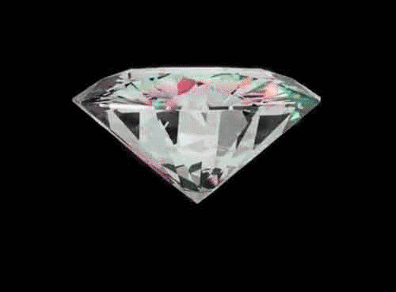

Je suis une étudiante en Marketing digital et en alternance chez Maison Alaïa 🛍
Rejoins moi sur LinkedIn !Depuis petite je rêve d'intégrer un groupe de luxe et de participer au dévelopement de grande marque. Ma passion se dirige particulièrement pour la maroquinerie et la joaillerie mettant en avant le savoir-faire des artisants et la qualité des matériaux supérieurs
